Squamish • Whistler • Sea to Sky
Photography Blog
Guides and stories from behind the camera in the Sea to Sky: where to shoot, how to shoot it, and the gear that gets it done.
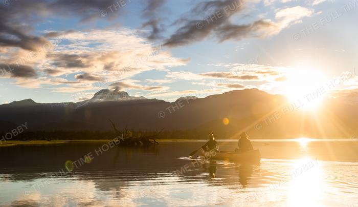
Landscape Photography
Photographing the Squamish Estuary and Howe Sound From the Water
How to photograph the Squamish Estuary and Howe Sound from a canoe or boat: golden hour timing, tides, protecting your gear, composition ideas and where to rent a canoe or book a boat trip.
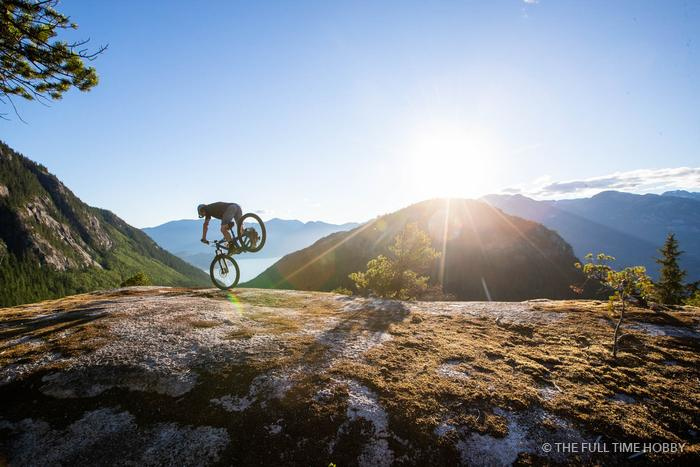
Action Photography
Mountain Bike Photography in Squamish & Whistler
How to photograph mountain biking in Squamish and Whistler: where to stand, shutter speeds, using flash and sunbursts, working with riders, and capturing the Sea to Sky forest and trails.
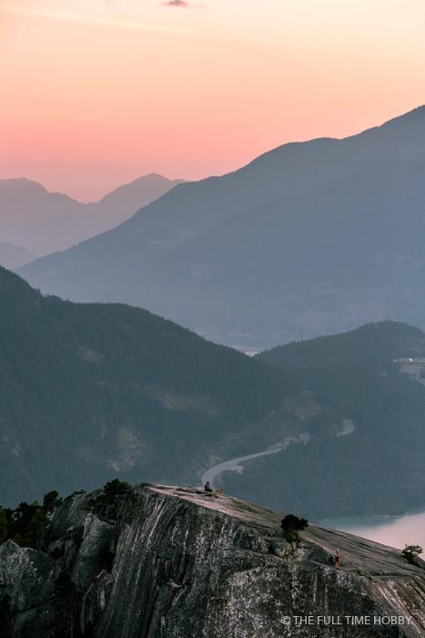
Landscape Photography
Photographing the Stawamus Chief: Viewpoints, Light & Seasons
Where and when to photograph the Stawamus Chief in Squamish: the best viewpoints, light through the seasons, rainbows and fog, safety on the trail and ideas for composition.

Real Estate Photography
How to Prepare Your Home for Real Estate Photos (Squamish & Whistler Checklist)
A room-by-room checklist for getting your home ready for photos, plus Sea to Sky details like hot tubs, mudrooms, bins and the view out the window.

Drone Photography
Flying a Drone in the Sea to Sky: Transport Canada Rules, Parks & Airspace
Certificates, controlled airspace, BC park permits and land access: what to know before flying a drone around Squamish, Whistler or Pemberton.

Real Estate & Drone
Why Sea to Sky Listings Need Aerial Photos (Acreage, Views & Neighbourhood Context)
When drone aerials make a Squamish, Whistler or Pemberton listing stronger, which shots to ask for and when to shoot them.
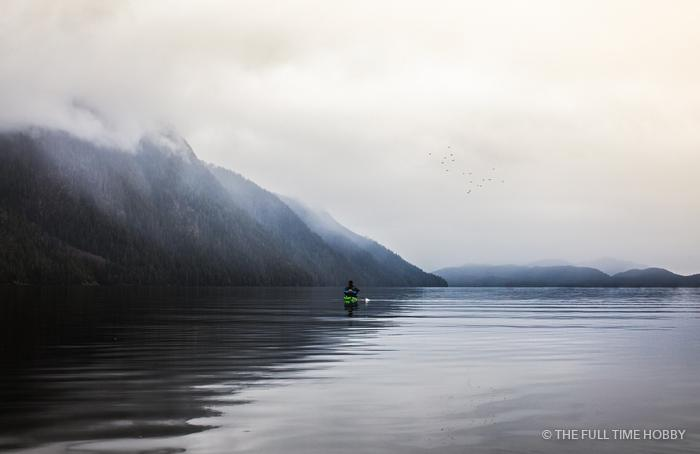
Landscape Photography
Best Sunrise & Sunset Photography Spots in Squamish
Where to photograph sunrise and sunset in Squamish, BC: the Stawamus Chief, Tantalus Lookout, the estuary, Smoke Bluffs, Porteau Cove and quiet lakes, with tips on timing, light and weather.
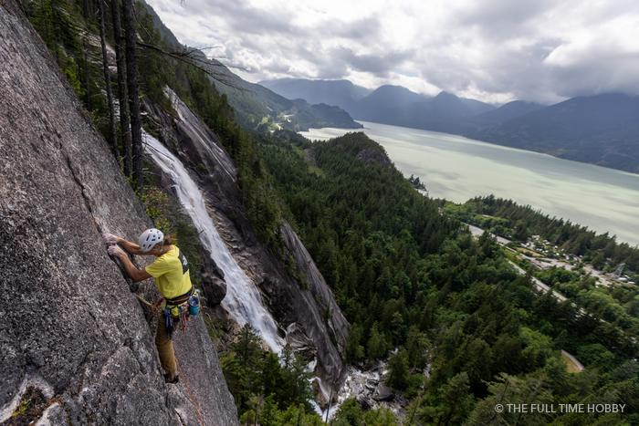
For Businesses
How to License Stock Photos of Squamish & Whistler (A Guide for Businesses)
Need photos of Squamish, Whistler or the Sea to Sky for your website, ads or print? How photo licensing works, what web, commercial and extended licenses cover, model releases, and how to buy one.
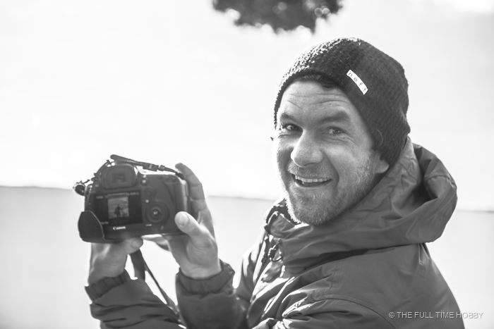
Gear
What Camera Gear to Rent for Your Sea to Sky Shoot
Renting camera gear in Squamish or Whistler? What to rent for adventure sports, wildlife, weddings, real estate and outdoor portraits: Canon R5, 70-200mm, 150-600mm, location strobes and adapters.
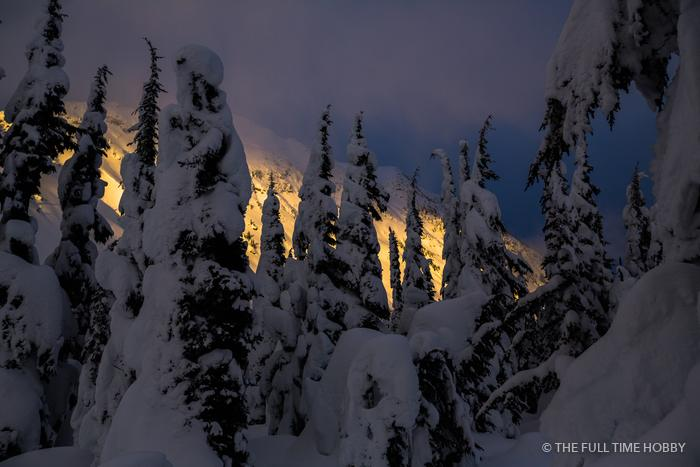
Winter Photography
Winter Photography in Whistler & Squamish
How to photograph skiers, snowy forests and winter light in the Sea to Sky, plus how to keep your camera working in the cold.
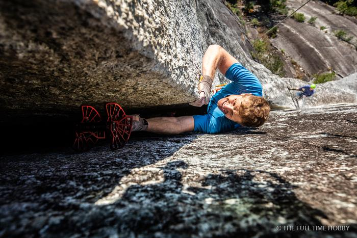
For Businesses
How to Plan a Brand Photo & Video Shoot in the Sea to Sky
Shot lists, locations, permits, weather backups and usage rights: what to sort out before you hire a photographer or videographer.
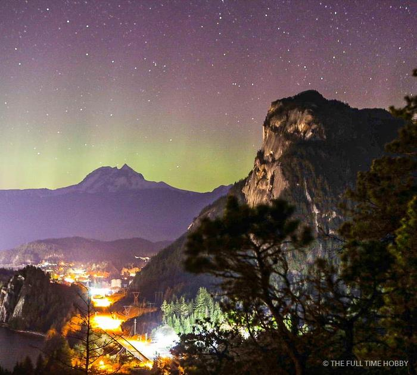
Night Photography
Photographing the Northern Lights in Squamish & Whistler
Where and how to photograph the northern lights around Squamish and Whistler, BC: aurora forecasts, dark-sky spots, camera settings and what to pack.
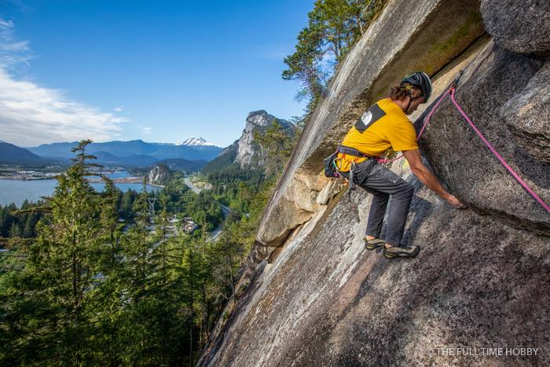
Action Photography
Squamish Adventure Photography: Climbing, Biking & Whitewater
Tips for photographing rock climbing, mountain biking, highlining and whitewater kayaking in Squamish and the Sea to Sky, with camera settings and gear.
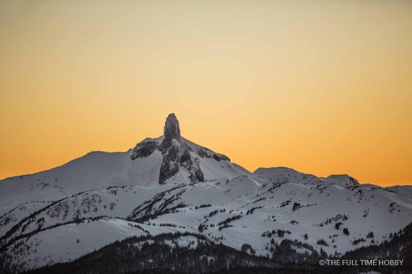
Landscape Photography
Sea to Sky Landscape Photography: Black Tusk, Garibaldi Lake & Howe Sound
Landscape photography along the Sea to Sky corridor: Black Tusk, Garibaldi Lake, Howe Sound and Lillooet Lake, plus tips on light, weather and planning.